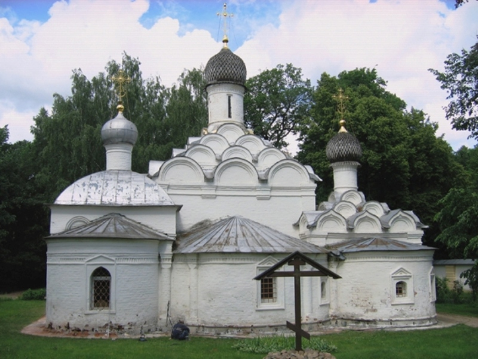

|  | Министерство культуры Российской Федерации Портал Культура.рф Проект «Образы России» |
The memorial estate Arkhangelskoye
Church of Archangel Michael with Saint Nicholas's and John the Baptist's chapels.

The village of Upolozi (the first reference to the village is in 1584) was named after the church (originally constructed in wood) and today is known as Arkhangelskoye (since 1646).
The one could see a small church on the bench of the Moskva River. The contrast of stone walls and small windows, pyramid of corbel arches and small onion-shaped domes on the top are typical for the Russian architecture of the XVII century. But the church also has some uncommon features: interior is divided in parts by two pillars and the chapels are constructed diagonally from each other, entrance is located in the north-westpart of the church. Rounded gable heads and wood shingle roofing were restored during the reconstruction in 1960s; south chapel's hipped roof remained after alternation which took place in the XIX century.
In the first third of the XIX century the church was surrounded by ensemble of mud brick wall with paired turrets and “Saint gates”; neo-Gothic belfry has not been preserved to the present day.